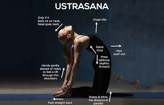
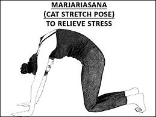

YOG ASAN
Yog Asan 1
Yog Asan 2
Yog Asan 3
Yog Asan 4
Sukhasna
INFO OF SUKHASNA
For vedio click here
Camel pose

INFO OF CAMEL POSE
For vedio click here
Marjariasana

INFO OF MARJARIASANA
For vedio click here